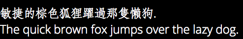

Open Sans Light only
敏捷的棕色狐狸躍過那隻懶狗.
The quick brown fox jumps over the lazy dog.
CloudSongFang only
敏捷的棕色狐狸躍過那隻懶狗.
The quick brown fox jumps over the lazy dog.
CloudSongFang and Open Sans linked
敏捷的棕色狐狸躍過那隻懶狗.
The quick brown fox jumps over the lazy dog.
Reference Bitmap (chrome on Mac)
